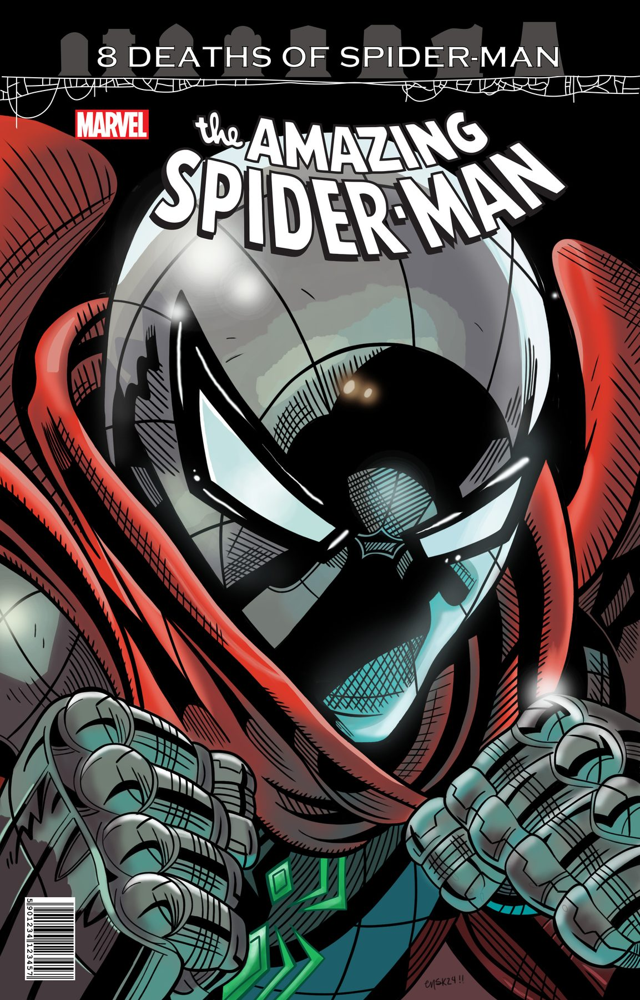
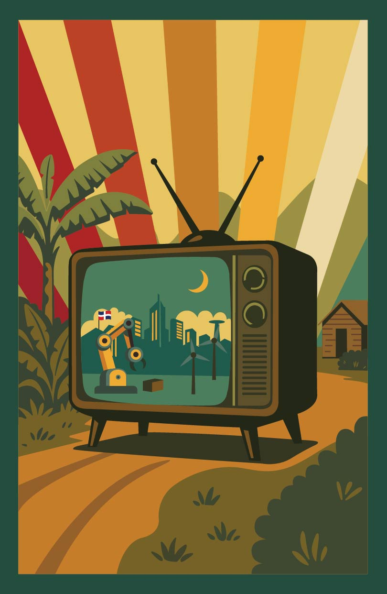
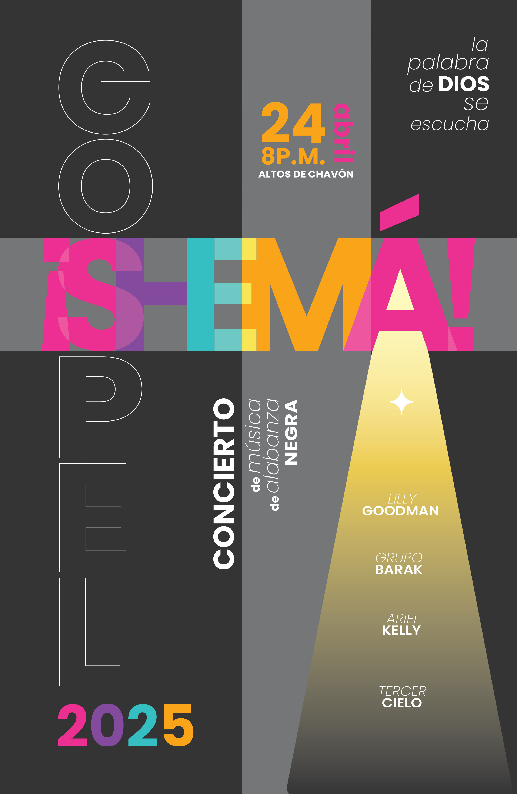
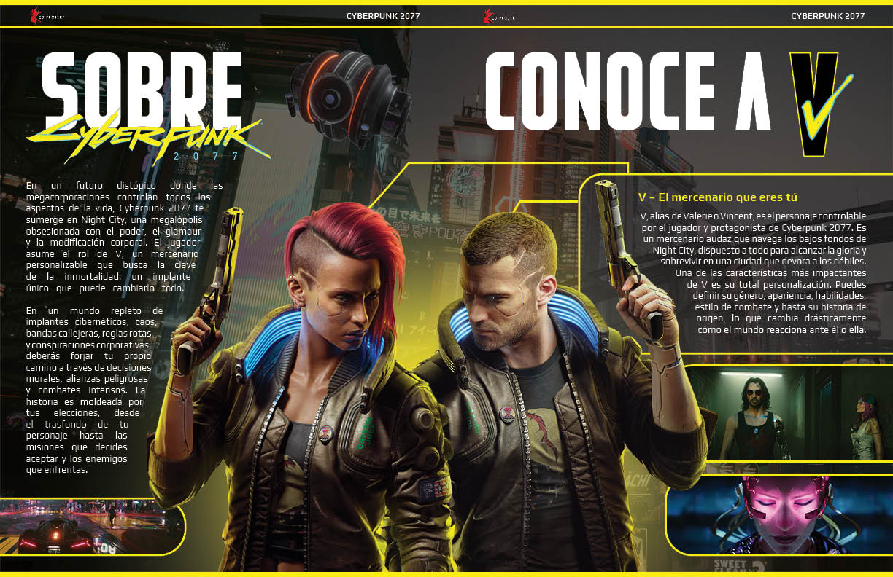
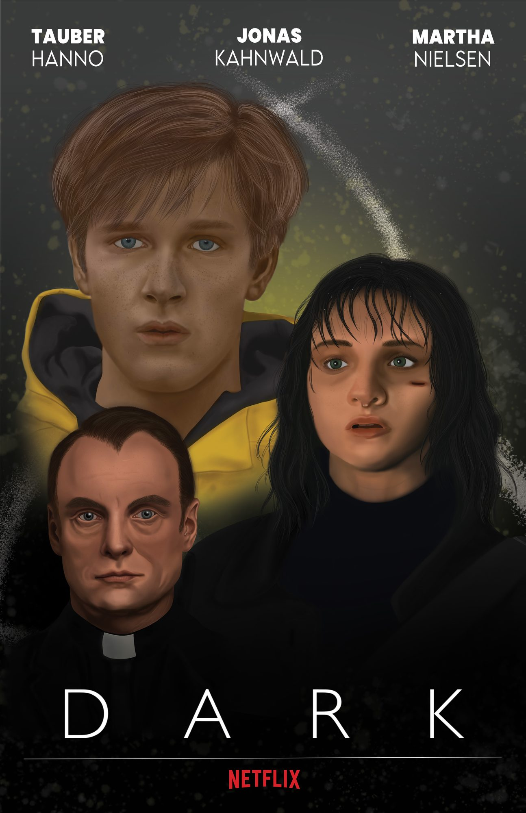
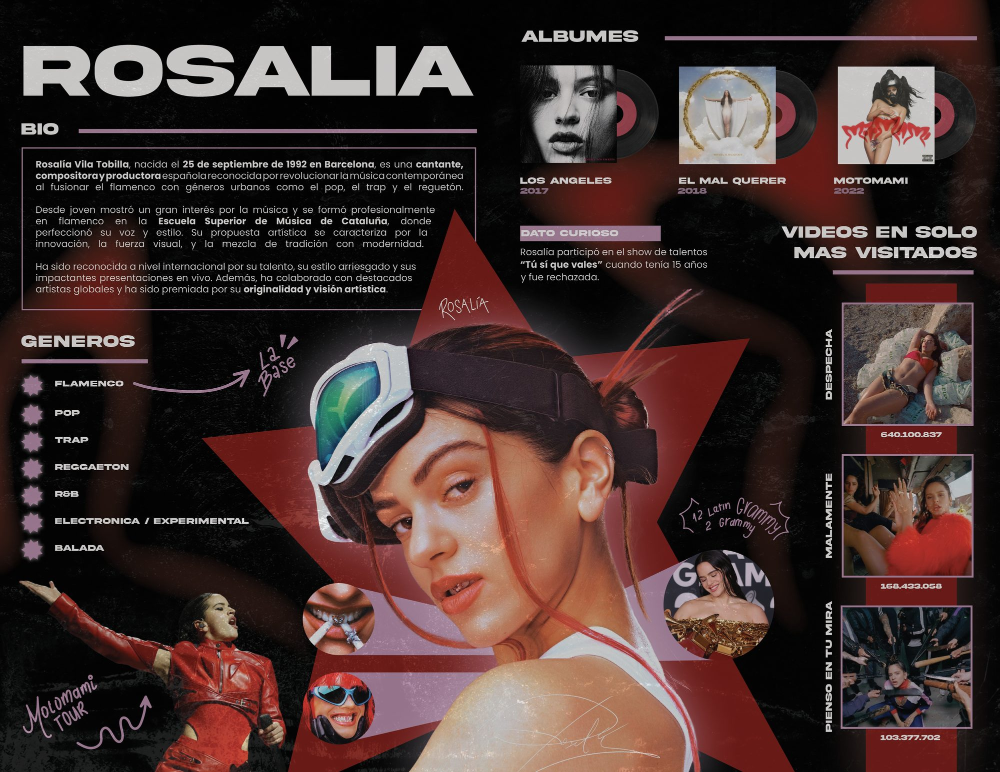
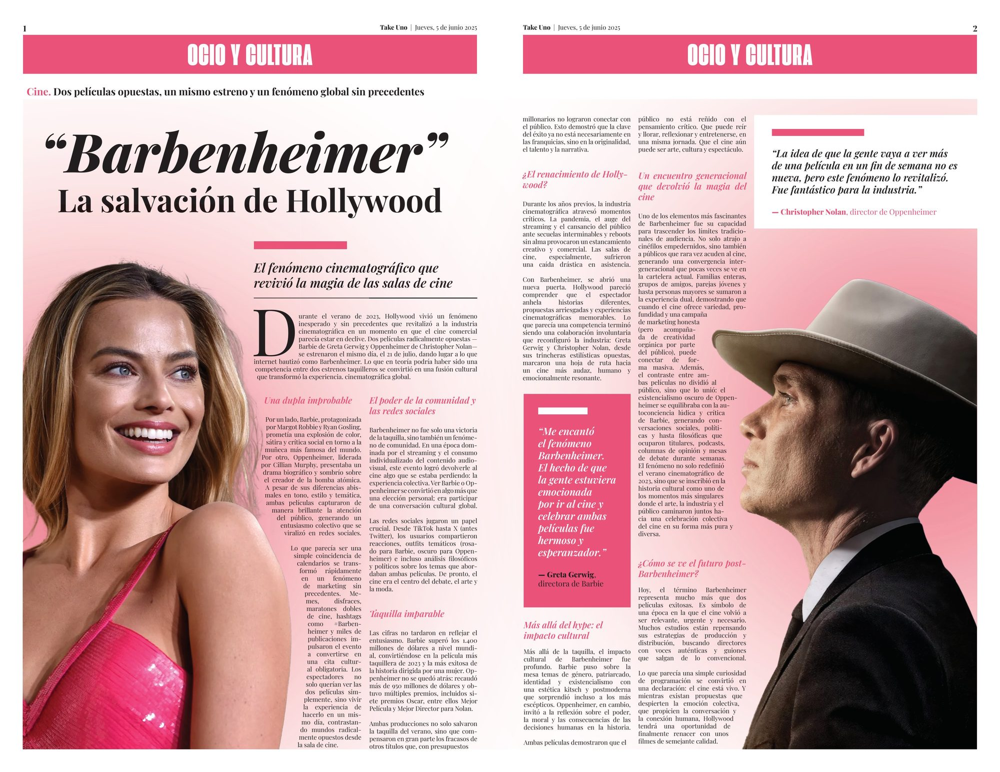
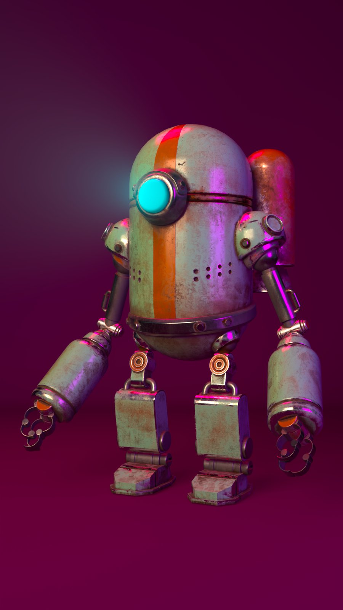
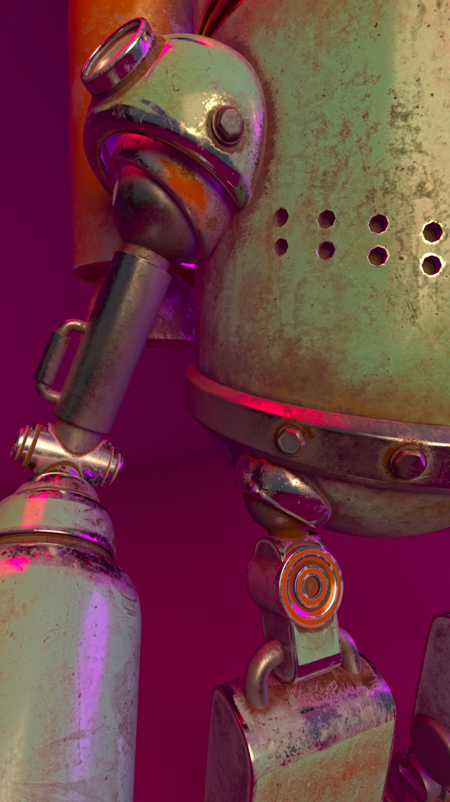
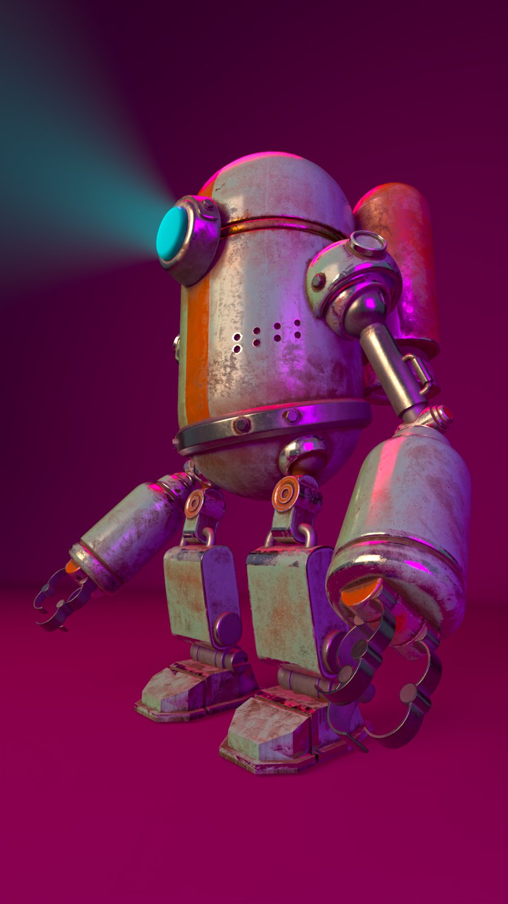

Identidad Profesional
Biografía Profesional
Mi nombre es Reychell Perdomo y soy una estudiante en etapas finales de la carrera de Multimedia. Me apasiona el arte y el poder utilizarlo para crear proyectos capaces de transmitir un mensaje y conectar con un espectador. Tengo una inclinación por el área del diseño gráfico, especialmente con enfoque en el diseño editorial y la maquetación. En adición a esto, tengo un interés creciente en la edición de videos y motion graphics.
Formación
Estudiante de término del Tecnólogo en Multimedia en el ITLA (Instituto Tecnológico de Las Américas).
Motivación
La multimedia me permite fusionar arte y tecnología para contar historias, resolver problemas y crear experiencias impactantes que conecten con las personas.
Software Dominado
- Programas de Adobe Creative Suite: Avanzado (Photoshop, Illustrator, InDesign, Premiere Pro) e Intermedio (After Effects).
- Autodesk Maya: Intermedio.
- Ableton Live: Intermedio.
- Figma: Intermedio.
Proyectos Multimedia


8 Deaths of Spider-Man
Curso: Ilustración Digital
Año: 2025
Herramientas: Adobe Photoshop, Illustrator


Poster vectorizado
Curso: Gráficos Vectoriales
Año: 2025
Herramientas: Adobe Illustrator

Poster vectorizado
Curso: Gráficos Vectoriales
Año: 2025
Herramientas: Adobe Illustrator


Pliego de revista de videojuegos
Curso: Desktop Publishing
Año: 2025
Herramientas: Adobe InDesign


Poster ilustrado sobre serie "Dark"
Curso: Ilustracion Digital
Año: 2025
Herramientas: Adobe Photoshop


Infografía creativa
Curso: Desktop Publishing
Año: 2025
Herramientas: Adobe InDesign

Artículo de periódico editorial
Curso: Desktop Publishing
Año: 2025
Herramientas: Adobe InDesign






Robot Steampunk (3 renders)
Curso: Modelado y Render 3D
Año: 2026
Herramientas: Autodesk Maya
Reflexión Profesional
Aprendizajes Clave
El tecnólogo me enseñó que la creación multimedia va más allá de la técnica; es sobre resolver problemas, comunicar ideas y conectar emocionalmente. Descubrí mi capacidad para pensar sistémicamente y adaptarme a diferentes lenguajes visuales.
Fortalezas y Debilidades
Fortalezas: Diseño de interfaces intuitivas, animación 2D, capacidad de síntesis visual.
Debilidades: Modelado 3D avanzado, programación backend. Plan de mejora: cursos especializados y proyectos desafiantes.
Proyección Futura
1 año: Buen dominio de modelado 3D y desempeñandome de una mejor manera en motion graphics.
3 años: Liderar proyectos multimedia en una agencia innovadora.
5 años: Desarrollar mi propio estudio de diseño especializado en educación digital.
Visión Profesional
Mi visión profesional como diseñadora multimedia está orientada hacia el diseño editorial, especialmente hacia la creación de revistas que combinen creatividad, estética y una identidad visual atractiva. Me interesa desarrollar piezas que no solo comuniquen un contenido, sino que también generen una conexión con el público y despierten el deseo de conservarlas y coleccionarlas. Disfruto llevar mis ideas del entorno digital a un formato tangible, donde el diseño pueda convertirse en una experiencia física a través de la composición, la tipografía, el color y los detalles de una publicación.
Contacto Directo
Información de Contacto
Ubicación
Santo Domingo, República Dominicana
Institución
ITLA - Instituto Tecnológico de Las Américas